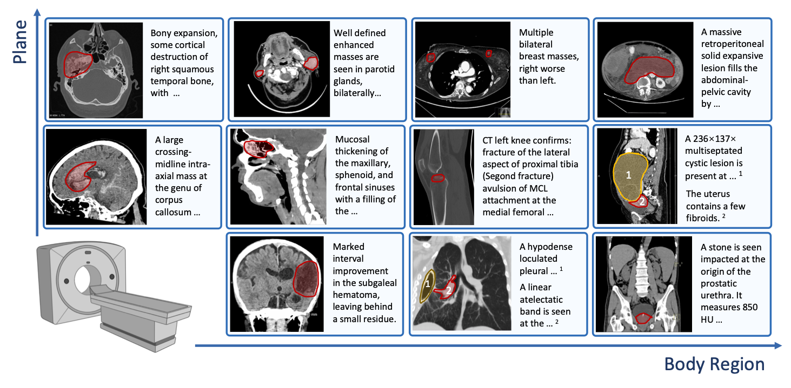
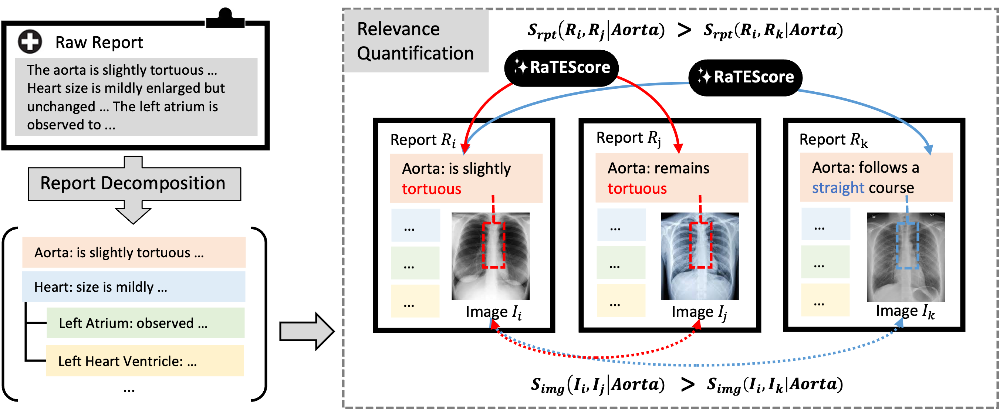
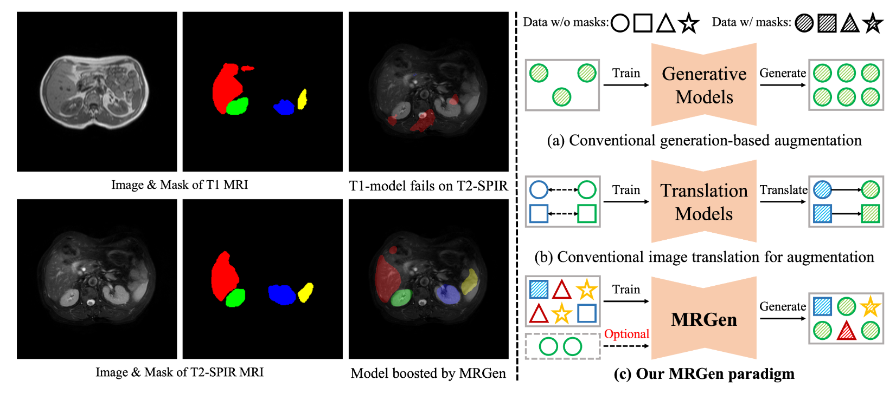
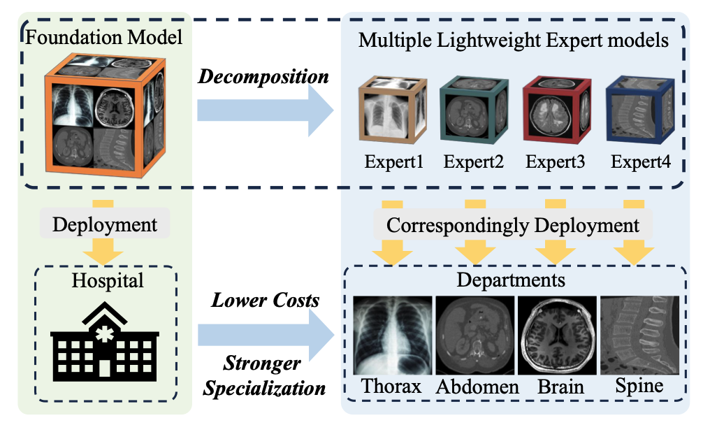
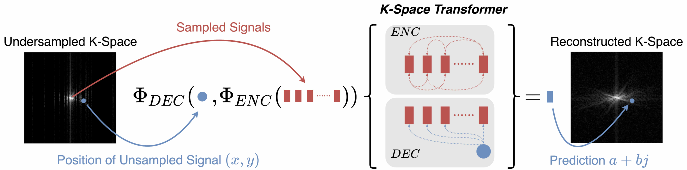

|
I'm a PhD candidate at Shanghai Jiao Tong University (SJTU) , advised by Prof. Weidi Xie. My current research interests is in Artificial Intelligence for Medical (AI4Med).
E-mail: Zhao_Ziheng@sjtu.edu.cn |
{kind=link}
|
* denotes equal contribution. |
|
|  |
Ziheng Zhao*, Lisong Dai*, Ya Zhang, Yanfeng Wang, Weidi Xie, Under Review, 2025. In this work, we advanced abnormality-centric CT interpretation with: (1) A taxonomy of 404 abnormalities developed with radiologists; (2) OminiAbnorm-CT-14K, a dataset of 14.5K CT images, covering different views and whole-body regions, and 19K grounded abnormalities, each linked to a detailed description and cast into the taxonomy ; (3) The OminiAbnorm-CT framework for grounded CT interpretation, allowing flexible text guidance and visual prompts. |
|  |
Tengfei Zhang*, Ziheng Zhao*, Chaoyi Wu, Xiao Zhou, Ya Zhang, Yanfeng Wang, Weidi Xie, International Conference on Medical Image Computing and Computer Assisted Intervention (MICCAI), 2025. In this paper, we proposed a scalable framework for multi-grained radiology image retrieval conditioned on text prompts. |
|  |
Haoning Wu*, Ziheng Zhao*, Ya Zhang, Weidi Xie, Yanfeng Wang, International Conference on Computer Vision (ICCV), 2025. In this paper, we propose MRGen, which can controllably synthesize data for unannotated modalities, without requiring registered data pairs, and extend segmentation models to unannotated modalities. |
|  |
HaoLin Li, Yuhang Zhou, Ziheng Zhao, Siyuan Du, Jiangchao Yao, Weidi Xie, Ya Zhang, Yanfeng Wang, Under Review, 2024. In this paper, we propose a novel framework named Low-Rank Knowledge Decomposition (LoRKD), to break down the foundation model into multiple lightweight expert models, each tailored to a specific domain. The goal of this paradigm is to improve the specialization of deployment models within a specific domain, while simultaneously reducing deployment costs. |
|
Ziheng Zhao, Yao Zhang, Chaoyi Wu, Xiaoman Zhang, Xiao Zhou, Ya Zhang, Yanfeng Wang, Weidi Xie, npj Digital Medicine, 2025. In this paper, we build up a large-vocabulary segmentation model for medical image, driven by text prompts (SAT). |
|

|
Xiaoman Zhang, Chaoyi Wu, Ziheng Zhao, Jiayu Lei, Ya Zhang, Yanfeng Wang, Weidi Xie, Under Review, 2024. In this paper, we introduce RadGenome-Chest CT, a comprehensive, large-scale, region-guided 3D chest CT interpretation dataset based on CT-RATE. It includes: Organ-level segmentation for 197 categories; 665K multi-granularity grounded reports; 1.3M grounded VQA pairs. |

|
Chaoyi Wu*, Jiayu Lei*, Qiaoyu Zheng*, Weike Zhao*, Weixiong Lin*, Xiaoman Zhang*, Xiao Zhou*, Ziheng Zhao*, Yanfeng Wang, Ya Zhang, Weidi Xie, Technical Report, 2023. We evaluate the GPT-4V on 92 radiographic cases, 20 pathoglogy cases and 16 location cases across 17 medical systems covering 8 imaging modalities. In general, as the cases shown, GPT-4V is still far from clinical usage. |

|
Xiaoman Zhang*, Chaoyi Wu*, Ziheng Zhao, Weixiong Lin, Yanfeng Wang , Ya Zhang, Weidi Xie, Communications Medicine, 2024. In this paper, we focus on the problem of Medical Visual Question Answering (MedVQA). We propose a generative medical VQA model, MedVInT, together with a large scale MedVQA Dataset, PMC-VQA. |

|
Weixiong Lin*, Ziheng Zhao*, Xiaoman Zhang, Chaoyi Wu, Yanfeng Wang , Ya Zhang, Weidi Xie, International Conference on Medical Image Computing and Computer Assisted Intervention (MICCAI), 2023. We collect a biomedical dataset, PMC-OA with 1.6M image-caption pairs collected from PubMedCentral's OpenAccess subset. |
 |
Ziheng Zhao, Tianjiao Zhang, Weidi Xie, Yanfeng Wang , Ya Zhang, British Machine Vision Conference (BMVC), 2022. We propose a novel Transformer-based framework to reconstruct undersampled MRI directly in k-space. |